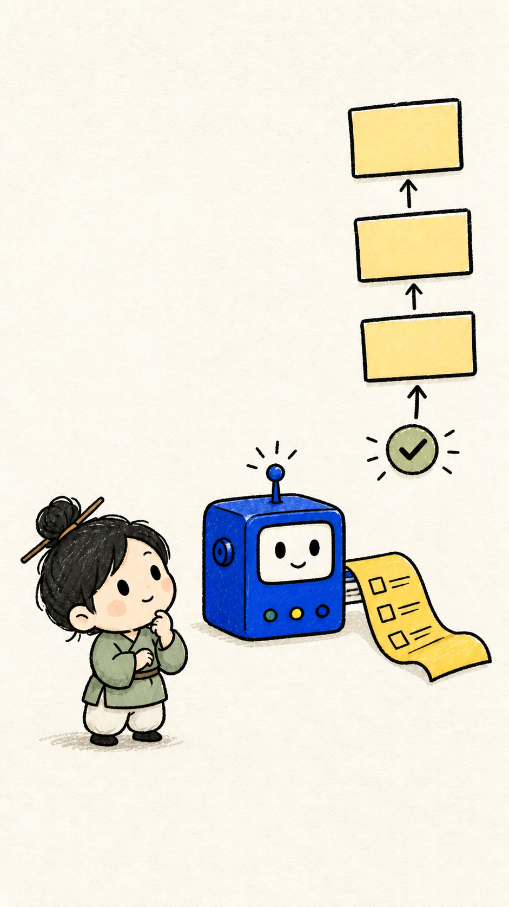
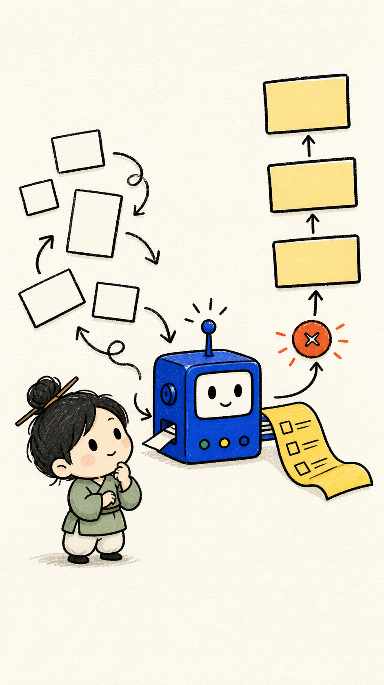
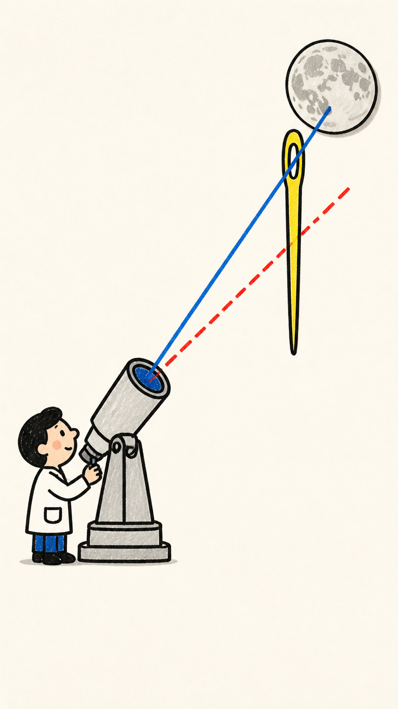
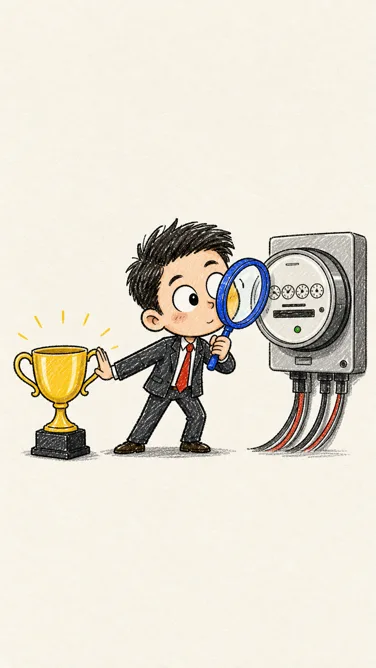
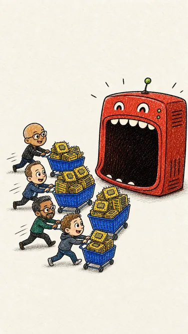

输入 / 已核验新闻口播约 41 秒
正在读取演示数据……
编辑角度
不只报速度，重点解释“为什么难、为什么重要、未来用在哪里”。
Current research delivery · 2026-08-30
这个库本质是 Prompt Skill，不是生图或视频模型。我们用热点新闻代码运动、单图图生视频、五镜头首尾帧图生视频三条路线，把它从“提示词方法”验证到 30 秒可播放成片。

从任务到行动Breaking-news demo
新闻发表于 8 月 28 日，本案例于 8 月 29 日核验。这里可逐镜检查 Skill 交付的分镜合同与双 Prompt；下方成片则验证它如何进入真实生产链。
正在读取演示数据……
不只报速度，重点解释“为什么难、为什么重要、未来用在哪里”。
输出 / 镜头 01
正在生成视图……
数字、日期、机构名和字幕留在确定性代码层；生成模型只负责隐喻画面。
Our integrated case · 41.02s
左侧是本项目的地月激光通信案例：七张实生成关键帧、MiniMax 配音、准确字幕与代码运动。右侧保留上游 Demo 722；两者并排展示，但不伪装成同一模型、同一素材或同一生产条件下的严格对照实验。
真实边界：这不是 Flow/Veo 生成的视频运动。图像由生成模型完成，切入与定格运动由代码完成；它展示的是一条成本低、可复现的参考成片路线。
✓ 已接入真实资产 页面读取实际构建元数据；视频、字幕、七镜头数据与生产脚本来自同一项目。
Real image-to-video test · 6.08s
新主题“AI Agent 整理任务”使用完成构图作为单图输入，由用户在外部平台生成。模型与平台参数没有随文件提供，因此这里只陈述可验证的媒体结果。

可观察结论
六秒内完成了卡片吸入、阻塞消失和清单展开，动作与“整理任务”的谓词一致；同时机器比例、人物姿态、箭头和卡片数量被重新设计，说明单图首帧更像强参考，而不是不可修改的版式合同。
Create a 6-second vertical 9:16 tactile paper stop-motion micro-animation from the supplied completed illustration. Keep a locked flat frontal camera. The scattered blank task cards make staggered paper-cutout hops along the arrows. Two cards feed into the blue machine; its roller turns and antenna blinks. The yellow checklist unrolls, the step cards settle from bottom to top, and the red bottleneck marker clears. Preserve the hand-drawn crayon style. No camera drift, zoom, face morphing, new characters, readable text, logos, watermark, photorealism, or 3D. No audio.
如何进入完整成片：这 6 秒是一个镜头，不是总片长。拆成 5 个同类镜头即可组成约 30 秒视频，再由 MiniMax TTS、字幕和后期声音完成最终交付。
30-second production board
Paired-frame final delivery
01–05 均使用各自 FIRST / LAST 和状态匹配 Prompt 在外部生成。项目只负责核验首尾、裁成每段 6 秒、统一为 1080×1920 / 24fps，并替换平台音轨为 30 秒 MiniMax 温润男声与准确字幕。
Current verified conclusion
库负责把文案编译成生产合同。图像模型提供风格与关键帧，视频模型生成每段中间运动，MiniMax 生成旁白，代码负责核验、裁切、字幕、响度和最终组装。拆开以后，质量问题和优化方向才可定位。
确定视觉隐喻、镜头职责、FIRST/LAST 状态、运动约束与禁用项。
10 张配对帧约束 5 条视频模型输出；真正的对象运动发生在这一层。
speech-2.8-hd 温润男声，逐镜拟合 6 秒并统一响度。
FFmpeg 标准化、拼接、AAC 音轨与两行硬字幕，结果可重复构建。
价值不在替代模型，而在稳定地产出可生成、可核验、可交接的镜头合同。
同一结构可复用于热点解读、知识解释、产品流程与品牌短片，并保留事实边界。
角色漂移、内部动作、画面重绘和成本不能只靠 Prompt 消除；具体外部模型与种子本次未知。
补模型登记、角色参考、自动评分、音色模板和一键回传组装，比继续堆长 Prompt 更有价值。
正在读取 5 镜头生产包……
当前可诚实交付：10 张首尾帧、5 条状态匹配 Prompt、5 条新首尾帧视频和 30 秒完整成片均已完成。上方镜头 04 的既有 MP4 继续作为历史单图实验保留，不计入本次 5/5，也没有被混入最终成片。
Three verified production routes
Skill 始终只负责中间层。新闻案例验证低成本、可复现的代码运动；单图 I2V 验证自然对象动作；最终首尾帧 I2V 用 10 张状态帧约束 5 段模型运动，再由确定性后期完成交付。
成本低、节奏和文字最可控；适合信息解释，但整图切片不能让人物真正操作物体。
动作更自然，输入更简单；模型会重画机器比例、人物姿态和卡片数量，版式约束较弱。
每镜头有精确起点、终点和状态匹配 Prompt；本项目已完成 5/5，并组装为 30 秒成片。
模型负责中间运动，代码负责 6 秒裁切、规格统一、旁白、字幕和响度，避免事实文字漂移。
分镜、配对帧、五条外部 I2V、MiniMax 旁白、字幕和最终 MP4 已全部交付，不再停留在 Prompt 演示。
下载文件没有携带这些信息，因此本研究不做模型归因或性价比排名；下一轮应在生成时自动登记。
锁人物和道具参考，按首尾偏差与动作语义打分，再加入环境声、转场与配乐，比继续堆长 Prompt 更能接近成熟样片。
Source → fact → metaphor
热点内容最危险的不是画得不好看，而是把数字、时间、机构或未来计划画成了不存在的事实。这套演示把四种信息明确分层。
中国科学院 8 月 27 日报道；新华社 8 月 28 日再次核验并补充参与单位与用途。
超过 40 万公里；上行 1.25Mbps；下行 100Mbps；8K 图像约 12 秒。
万里穿针、噪声中捞光子、地月信息高速路——帮助理解，但不冒充设备实拍。
“深空竞争也比数据回传能力”是本案例的收束观点，不伪装成科研机构原话。
权威来源 / 访问于 2026-08-29
选择理由正在从演示数据读取……

万里穿针Skill 规定构图、色板、隐喻与禁用项；图像模型 画无文字底图；HTML/CSS 准确叠加中文。
这是七张独立生成底图中的一张；上方完整成片将它与另外六张关键帧一起投入确定性合成。Evidence audit
事实来自固定 commit 的本地文件、像素采样、媒体元数据和规则对照；解释与建议单独标记。
实测 / 背景一致性
对 4 张 PNG 顶部空白区域共 2,240 个像素点采样，命中精确 `#F8F6EF` 的比例为 0%；这验证了上游自己提出的后处理建议。
观察 / 规则漂移
判断 / 成熟度
上游成片 / Demo 722
视频包含图像生成、图生视频、配音、字幕和剪辑的共同结果。仓库没有记录完整模型版本、随机种子、调用参数与成本，因此它是展示证据，不是严格可重复实验。


How it works
它用宿主大模型完成语义理解，再通过重复约束、首尾帧运动语法和确定性后期分层来压低生成随机性。
按观点推进拆分，而不是按标点截断；每镜头只保留一个核心关系。
在每条 Prompt 中重复比例、底色、线条、配色、构图和禁止项。
锁定镜头，以纸片滑入和轻微弹跳替代复杂表演，最终贴合尾帧。
隐喻交给生成模型，Logo、数字、长文本和字幕交给确定性工具。
仓库直接提供
取决于宿主环境
仓库没有提供
Value · scenarios · extensions
它节省的不是一次复制 Prompt 的时间，而是反复做资料归纳、找解释角度、拆镜头、统一风格和交接后期的认知成本。
把“读资料—找角度—拆镜头—写双 Prompt”压成一个可检查的步骤链。
编辑、设计、生成和后期共享同一份事实、画面与风险说明，减少口头返工。
角色、色板、开场、结尾和领域隐喻不再每条视频从零开始。
使用场景
越需要把因果、数字和概念讲清楚，这套方式越有价值；越依赖现场真实性，越需要谨慎。
用隐喻解释技术难点、市场关系与数字变化。
连续 4–6 秒教学镜头，便于保持风格和认知节奏。
把固定语气、人物与视觉资产沉淀为栏目模板。
事实变化快且误导成本高，不能让漂亮隐喻掩盖不确定性。
可扩展方向
先保证事实和文字，再追求更多模型、更多画风和更快产量。
把来源、发布时间、事实、观点与隐喻分字段存储，新闻变化时可以追踪和纠错。
把中文、机构名、数字、单位和字幕从概率模型中剥离；本页“万里穿针”已经这样做。
按新鲜度、信源质量、受众相关性和视觉化潜力筛选新闻，而不是只追搜索热度。
按 Flow、Veo、Kling 等能力生成不同运动语法，并检测色板、构图和末帧漂移。
补角色 Bible、领域隐喻库、TTS、字幕、时间线、重试、成本与版本追踪。